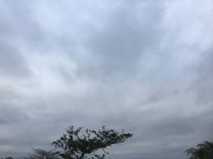

うるがいの話 ある日
最新: ２０２３年建国記念の日【うるがいの話 ある日】とは 一日だけのプログです
『うるがいの話』の最新一日だけのプログで、通信料が少なく経済的だ。カニの画像をクリックすると全ての日付が載る『うるがいの話』サイトを表示します
|
|
【うるがいの話】 うるがい(ｳﾙｶﾞｲ urugai)とは、『もずくがに』の名前でとても大きくなります。 |
|---|---|
|
|
【カミマヤーの話】 猫のことを方言でマヤーといいます。カミマヤー（kamimayaa）とは、神の猫のことです。 |
|
【たながぁの音楽】 たながぁ（ﾀﾅｶﾞｰ tanagaa）とは手長えびのことで、何種類かあり大きいのは車 エビぐらいになります。 |

|
【ぶながぁの話】 ぶながぁ(ﾌﾞﾅｶﾞｰ bunagaa)とは、赤い髪の毛、赤い身体、そして身長は１ｍ２０ｃｍ ぐらい、川の蟹を食べているの目撃された。場所は沖縄県国頭郡大宜味村のと ある村僕の隣近所に住んでいる爺さんから、聞いた話です。 |
|
|
【ギーマの話】 ギーマ(giima)とは、山原の里山に咲くスズランに似た、 花を付けます。実は食べられます、 気が付くと口の周りが紫になっています。 |
2023年02月11日 (土）２０２３年建国記念の日
16:27

１９７８年の『建国記念の日』は、穏やかな晴れの日だった。小さい近所のケ
ーキ屋さんにいったら、大勢の女性や家族連れで、にぎわっていた。ところで
『建国記念の日』は、日本の建国された日と思っていた。トホホ、ネットでは
「建国記念の日」で「建国記念日」はない？
日本は大変歴史が古い国で、長い間治世者として国を治めてきた皇室は、世界
で最も歴史が長い王家として、ギネスブックにも記録されている一方、いつ日
本が建国されたかわかる明確な資料はまだ見つかっていないのです。
そのため、建国記念日ではなく、日本が建国されたことを祝う日として、「建
国記念の日」という名前なのです。
体重がなかなか落ちないので、先週から食事の回数を２食に減らした。効果てき
面、１キログラムほど落ちる。朝食と昼食を合体、１１時頃に１食目をとる。夕
食は今まで通り、普通にお菓子も頂く。
１６時２０分 ビットコインの総資産 ￥８、２５３（↓８５）